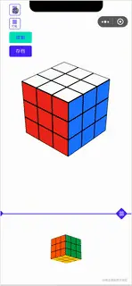
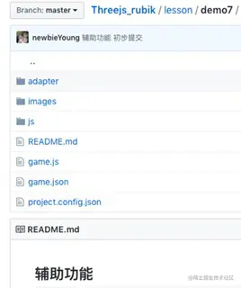
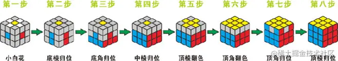
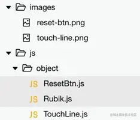
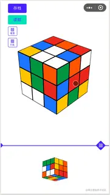
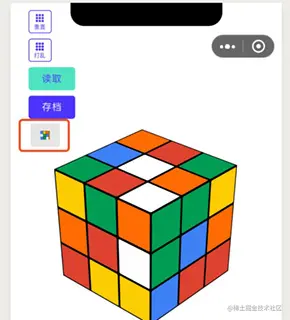

在这一章中你将学到以下知识点：
Object3D对象matrix属性含义及应用；Object3D对象matrix属性和matrixWorld属性的差异；Scene对象删除元素；CanvasTexture对象和Texture对象的联系及区别。可以说目前我们已经完成这个魔方小游戏的主要功能，还剩下一些辅助功能，比如重置、打乱、存档、读取等功能；

示例代码在 Threejs_rubik 项目中；

之所以会加这些辅助功能是因为有些魔方还原算法是一步步达成目标的，比如初学者常用的层先法；

在学习过程中很难一蹴而就，其中的每一步从了解到熟练都需要重复很多次，因此基于这种一开始不能完整还原但是又需要重复训练的情况，加入了这些辅助功能。
在正反视图那章我们处理过控制条 UI 元素，在这里可以采用同样的方法处理重置按钮、打乱按钮、存档按钮、读取按钮；
以重置按钮举例来说：
重置按钮素材图片如下：
把图片素材统一存放到images目录中，并在object目录中新增ResetBtn.js；

完整代码如下：
import * as THREE from '../threejs/three.js'
export default class ResetBtn {
constructor(main) {
this.main = main;
this.isActive = false;
var self = this;
//实际尺寸
this.realWidth = 64;
this.realHeight = 64;
this.radio = this.main.originWidth / 750;
//逻辑尺寸
this.width = this.realWidth * this.radio;
this.height = this.width;
//屏幕尺寸
this.screenRect = {
width: this.width / this.main.uiRadio,
height: this.height / this.main.uiRadio
}
//加载图片
var loader = new THREE.TextureLoader();
loader.load('images/reset-btn.png', function (texture) {
var geometry = new THREE.PlaneBufferGeometry(self.width, self.height);
var material = new THREE.MeshBasicMaterial({ map: texture, transparent: true });
self.plane = new THREE.Mesh(geometry, material);
self.plane.position.set(0, 0, 0);
self.main.scene.add(self.plane)
self.defaultPosition();
}, function (xhr) {
console.log((xhr.loaded / xhr.total * 100) + '% loaded');
}, function (xhr) {
console.log('An error happened');
});
}
}
实际尺寸可以由图片素材宽度决定；
/* ResetBtn.js 第11行至第12行 */
this.realWidth = 64;
this.realHeight = 64;
逻辑尺寸等于实际尺寸乘以缩放比率；
/* ResetBtn.js 第17行至第18行 */
this.width = this.realWidth * this.radio;
this.height = this.width;
缩放比率则等于 UI 元素所在平面宽度除以设计稿页面宽度；
/* ResetBtn.js 第14行 */
this.radio = this.main.originWidth / 750;
重置按钮的屏幕尺寸计算和控制条不一样，控制条可以明确的知道投影到屏幕上时应该是完全铺满屏幕的，那么就可以确定控制条屏幕尺寸的宽度，然后根据宽高等比缩放的原则可以求出控制条屏幕尺寸的高度；
但是重置按钮并不能确定投影到屏幕上的宽高，此时可以根据控制条的屏幕尺寸计算投影缩放比率；
/* main.js 第114行 */
this.uiRadio = this.originWidth / window.innerWidth;
然后保证所有 UI 元素都遵循同一缩放比率即可。
/* main.js 第21行至第24行 */
this.screenRect = {
width: this.width / this.main.uiRadio,
height: this.height / this.main.uiRadio
}
最后根据图片路径加载图片，在加载成功回调函数中创建重置按钮并加入到场景中即可，在defaultPosition函数中定义默认位置。
其它 UI 元素也类似，就不一一赘述了。
各种 UI 元素定义完成之后在需要在main.js中引入；
import ResetBtn from 'object/ResetBtn.js'
import DisorganizeBtn from 'object/DisorganizeBtn.js'
import SaveBtn from 'object/SaveBtn.js'
import RestoreBtn from 'object/RestoreBtn.js'
然后在initObject函数中统一创建即可。
//重置按钮
this.resetBtn = new ResetBtn(this);
//混乱按钮
this.disorganizeBtn = new DisorganizeBtn(this);
//保存按钮
this.saveBtn = new SaveBtn(this);
//还原按钮
this.restoreBtn = new RestoreBtn(this);
由于经过一系列打乱动画、转动魔方、转动视图、调整正反视图区域大小操作后，魔方的位置和开始的时候已经有了很大差别；
而重置魔方操作只需要把魔方还原成每个面颜色一致的状态，并不需要把正反视图区域大小也还原为初始状态；
这就要求有些变换需要还原，比如打乱动画、转动魔方、转动视图；而有些变换不需要还原，比如调整正反视图区域大小；
在前边的实现过程中我们既没有记录做了哪些变换操作，又没有对这些变换操作进行区分，粗一看起来实现重置魔方功能略微有些复杂，要想简单处理貌似只有重新创建场景这个方法。
实际上基于 ThreeJS 框架提供的一些功能使得重置魔方位置比你想象的要简单；在魔方转动那一章曾提到过Object3D对象有一个matrixWorld属性保存了物体在世界坐标系变换矩阵，这个对象还有一个matrix属性保存了物体在其父元素坐标系中的变换矩阵（如果物体没有父元素那么matrix和matrixWorld相同）；
魔方小方块的父元素是Group对象，只需要对这些方块做matrix的逆矩阵的变换就可以让魔方小方块回到其相对于父元素的初始位置了；
/* Rubik.js 第615行至第618行 */
var matrix = this.cubes[i].matrix.clone();
matrix.getInverse(matrix);
var cube = this.cubes[i];
cube.applyMatrix(matrix);
matrix.clone()会克隆当前矩阵创建一个新的矩阵，matrix.getInverse(matrix)会得到matrix的逆反矩阵，之后执行cube.applyMatrix(matrix)对小方块做逆反矩阵变换即可，效果如下：

你可能会问，27 个小方块变成 1 个这是还原操作吗？
主要是因为创建这 27 个小方块时默认其中心都在父元素自身坐标系的坐标原点，那么对所有小方块做逆反矩阵变换自然都会回到初始位置，看起来也就重叠在一起了；
从图中可以看到转动魔方和转动视图操作都被还原了，但是调整正反视图区域大小的操作并没有，刚好符合要求。
只需要把所有小方块中心重新设置为初始中心位置就可以解决重叠在一起的问题了，而小方块的初始中心位置以及对应id在魔方创建时就已经保存在initStatus数组中了；
/* Rubik.js 第620行至第629行 */
for(var j=0;j<this.initStatus.length;j++){
var status = this.initStatus[j];
if (cube.id == status.cubeIndex){
cube.position.x = status.x;
cube.position.y = status.y;
cube.position.z = status.z;
cube.cubeIndex = cube.id;
continue;
}
}
遍历数组然后根据id属性还原即可。
完整代码如下：
/* Rubik.js 第613行至第631行 */
reset(){
for(var i=0;i<this.cubes.length;i++){
var matrix = this.cubes[i].matrix.clone();
matrix.getInverse(matrix);
var cube = this.cubes[i];
cube.applyMatrix(matrix);
for(var j=0;j<this.initStatus.length;j++){
var status = this.initStatus[j];
if (cube.id == status.cubeIndex){
cube.position.x = status.x;
cube.position.y = status.y;
cube.position.z = status.z;
cube.cubeIndex = cube.id;
break;
}
}
}
}
有重置功能自然需要对应的打乱功能，在初始动画那一章我们已经分析过怎么随机打乱一个魔方了，这里只需要把打乱魔方逻辑从初始动画函数enterAnimation中封装抽离出来即可。
/* main.js 第303行至第305行 */
this.disorganizeRubik(function () {
self.initEvent();//进场动画结束之后才能进行手动操作
})
/* main.js 第505行至第517行 */
disorganizeRubik(callback){
var self = this;
if(!this.isRotating){
this.isRotating = true;
var stepArr = this.frontRubik.randomRotate();
this.endRubik.runMethodAtNo(stepArr, 0, function(){
if (callback){
callback();
}
self.resetRotateParams();
});
}
}
重置和打乱功能只能保证不管能不能还原魔方都能回到魔方的初始状态，而存档和读取则能保证可以随时回到特定状态。

点击存档之后，按钮下方会出现一个不断旋转的小魔方，因此存储魔方可以采用克隆一个新魔方的方法，并把克隆得到的新魔方定位到特定位置。
在重置魔方功能的实现中我们已经知道所谓的魔方状态其实是由小方块位置决定的，而小方块的位置则是由其变换矩阵matrix决定的，也就是说魔方的状态其实就存储在小方块的变换矩阵中；
那么克隆魔方也就是复制该魔方小方块的变换矩阵了。
/* Rubik.js 第636行至第655行 */
save(rubik, position ,number) {
for (var i = 0; i < this.cubes.length; i++) {
var matrix = rubik.cubes[i].matrix.clone();
var selfMat = this.cubes[i].matrix.clone();
selfMat = selfMat.getInverse(selfMat);
this.cubes[i].applyMatrix(selfMat);
this.cubes[i].applyMatrix(matrix);
}
this.updateCubeIndex(this.cubes);
if (position){
this.group.position.x = position.x;
this.group.position.y = position.y;
this.group.position.z = position.z;
}
if (number!=null){
this.group.scale.set(number, number, number);
}
}
存储魔方函数saveRubik接收三个参数，分别是：
rubik表示克隆的样例魔方；position表示新魔方的中心点；number表示缩放倍数；遍历魔方中的小方块然后使其变换到克隆的样例魔方中小方块的位置，然后更新小方块索引；如果传入新的中心点和缩放倍数则需要设置中心以及进行缩放。
存储魔方状态函数saveRubik完整代码如下：
/* main.js 第522行至第558行 */
saveRubik(){
wx.showLoading({
title: '存档中...',
mask:true
})
var bgCanvas = background();
var radio = this.originWidth / 750;
if (!this.tagRubik){
this.tagRubik = new BasicRubik(this);
this.tagRubik.model();
}
var tagPosition = this.saveBtn.getPosition();
tagPosition.y -= this.saveBtn.height/2+15;
tagPosition.x += (this.saveBtn.width - bgCanvas.width) / 2 * radio;
this.tagRubik.save(this.frontRubik, tagPosition, 0.05);
this.scene.add(this.tagRubik.group);
//添加灰色半透明背景
if (!this.tagRubikBg){
var bgWidth = bgCanvas.width * radio;
var bgHeight = bgCanvas.height * radio;
var geometry = new THREE.PlaneGeometry(bgWidth, bgHeight);
var texture = new THREE.CanvasTexture(bgCanvas);
var material = new THREE.MeshBasicMaterial({ map: texture, transparent: true });
this.tagRubikBg = new THREE.Mesh(geometry, material);
}
this.tagRubikBg.position.x = tagPosition.x;
this.tagRubikBg.position.y = tagPosition.y;
this.tagRubikBg.position.z = tagPosition.z;
this.scene.add(this.tagRubikBg);
setTimeout(function(){
wx.hideLoading()
},500)
}
在这个函数中需要几点需要注意的地方：
wx.showLoading和wx.hideLoading是为了防止过多且过快的点击存储按钮；
如果标签魔方和圆角矩形半透明背景已经存在了则不需要再次创建，只需要更新其状态就好了；
var bgCanvas = background()是生成圆角矩形半透明背景；
在绘制圆角矩形半透明背景时使用了CanvasTexture对象，它其实继承自Texture对象；区别在于CanvasTexture对象只能使用Canvas元素作为素材且其needsUpdate属性默认为true，这样才能保证Canvas元素内容被完全加载了；
标签魔方的中心位置可以由存储按钮的位置计算得到。
var tagPosition = this.saveBtn.getPosition();
tagPosition.y -= this.saveBtn.height/2+15;
tagPosition.x += (this.saveBtn.width - bgCanvas.width) / 2 * radio;
读取魔方只需要让正视角魔方和反视角魔方都复制标签魔方就好了，另外还需要从场景中删除调标签魔方以及背景。
/* main.js 第563行至第575行 */
restoreRubik(){
if (this.tagRubik){
this.frontRubik.save(this.tagRubik);
this.endRubik.save(this.tagRubik);
if (this.tagRubik) {
this.scene.remove(this.tagRubik.group);
}
if (this.tagRubikBg) {
this.scene.remove(this.tagRubikBg);
}
}
}
点击重置、打乱、存储、读取等按钮都需要在触摸开始事件的回调函数touchStart中处理；
/* main.js 第196行至第208行 */
else if (this.resetBtn.isHover(touch) && !this.isRotating){
this.resetBtn.enable();
this.resetRubik();
} else if (this.disorganizeBtn.isHover(touch) && !this.isRotating){
this.disorganizeBtn.enable();
this.disorganizeRubik();
} else if (this.saveBtn.isHover(touch) && !this.isRotating){
this.saveBtn.enable();
this.saveRubik();
} else if (this.restoreBtn.isHover(touch) && !this.isRotating){
this.restoreBtn.enable();
this.restoreRubik();
}
最后在触摸结束事件的回调函数touchEnd中重置它们的状态。
/* main.js 第251行至第254行 */
this.resetBtn.disable();
this.disorganizeBtn.disable();
this.saveBtn.disable();
this.restoreBtn.disable();
了解 ThreeJS 框架的各种对象的用法能帮助你熟悉这个框架，但是如果你想掌握这个框架估计得从掌握Object3D这个对象开始！